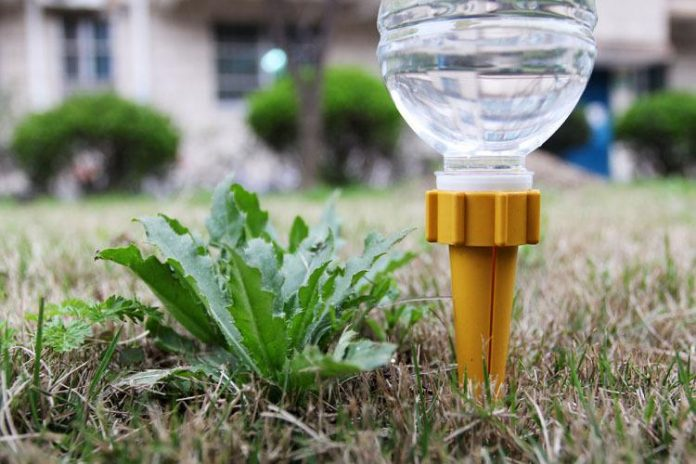

Descrição: O sistema de irrigação foi pensado para garantir que as plantas recebam a quantidade ideal de água, economizando recursos e otimizando o crescimento. Este sistema utiliza de materiais recicláveis, fazendo que a irrigação seja constante, mas não exagerada, evitando o desperdício de água e garantindo a saúde das plantas.
Componentes: O sistema é composto por garrafas pet que realizam o gotejamento nas plantas.
Vantagens: Redução do consumo de água, crescimento mais saudável das plantas, e menor necessidade de intervenção manual.